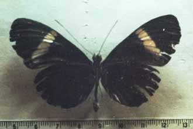
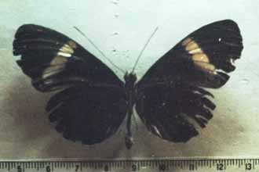
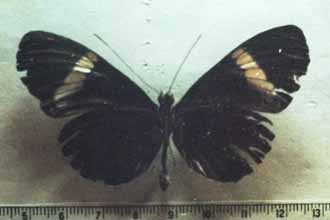
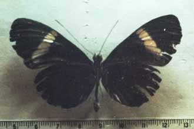

To next hybrid
To previous hybrid
NOTES No: 96 Genus of species 1: Heliconius Species 1: melpomene Subspecies of species 1: melpomene Genus of species 2: Heliconius Species 2: cydno Subspecies of species 2: barinasensis Sex: f Country: Venezuela Locality: ?Barinas: Barinitas Year: Photo no.: melcyd50 Named hybrid: Collection: O. Mattei Collector: K. Brown photo: Mattei 2 Author/publication: Notes: BC->cydno
Last updated: 18 October 2003